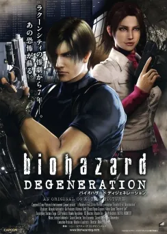

The genetics
The film's threat is a pair of laboratory-made viruses from the Resident Evil franchise: the T-virus, which turns people into zombies, and the G-virus, which causes rapid, monstrous mutation. Both were created by the Umbrella Corporation, and here they are traded as products: the researcher Frederic Downing stole them, developed vaccines at WilPharma, and staged bioterror attacks to create demand and to sell the whole package of viruses and vaccines to an arms buyer. The activist group TerraSave accuses WilPharma of experimenting on people, and Curtis Miller, manipulated by Downing, turns himself into a mutant monster with the G-virus. The story presents pharmaceutical science as entangled with corporate greed, bioterrorism and government cover-ups; even after Downing's arrest, a new corporation, Tricell, collects samples to continue the work. As in the games, the viruses are fantasy: no virus can reanimate the dead or reshape a body within minutes.
How genetics is portrayed
- Overall portrayal of genetics
- negative Virus research is a business of bioterror, greed and cover-ups, and the ending shows the cycle continuing under Tricell.
- Outcome of the genetic intervention
- negative The viruses cause an airport outbreak, Curtis's mutation into a monster and many deaths, and the samples pass to a new corporation.
- Frederic Downing
- villain Aim: commercial (negative). The WilPharma head researcher, a former Umbrella scientist, stole the T and G viruses, developed vaccines and staged bioterror attacks to sell viruses and vaccines to buyers; he is unmasked as the mastermind and arrested. His claim that he wanted to prevent another Raccoon City is not presented as sincere.
- Tricell
- villain Aim: commercial, power (negative). The corporation buys WilPharma, has the senator killed and harvests G-virus samples from Curtis's body, setting up the continuation of the bioweapons trade.
The story
In this computer-animated Resident Evil film, set seven years after the destruction of Raccoon City, a T-virus outbreak hits Harvardville Airport, where the activist Claire Redfield meets Senator Ron Davis, a shareholder in the pharmaceutical company WilPharma. Federal agent Leon S. Kennedy leads the rescue. WilPharma's vaccine trucks are blown up, and terrorists demand that the government admit its role in the Raccoon City disaster. At WilPharma's research facility, Claire learns from its head researcher, Frederic Downing, that the company is also working on the G-virus. Curtis Miller, a Raccoon City survivor and the brother of Leon's partner Angela, bombs the facility and injects himself with the G-virus, becoming a monster that Leon eventually kills. Downing turns out to be the mastermind: a former Umbrella researcher who stole the T and G viruses and staged the attacks to sell viruses and vaccines to buyers such as General Grande. He is arrested, but the company Tricell buys WilPharma and recovers G-virus samples from Curtis's body.